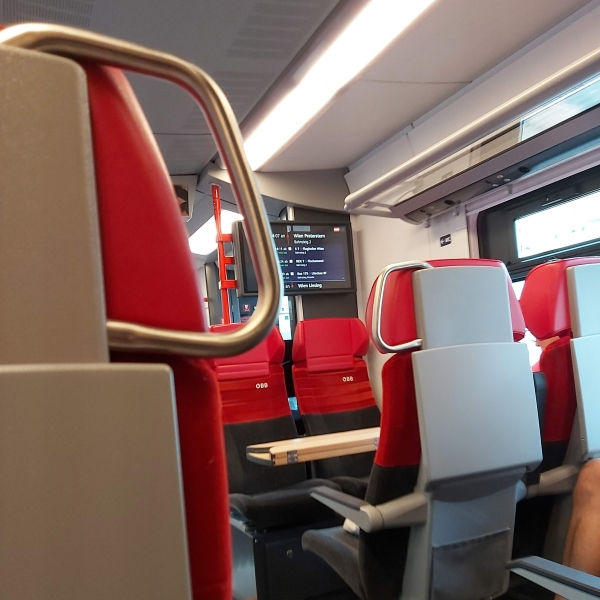
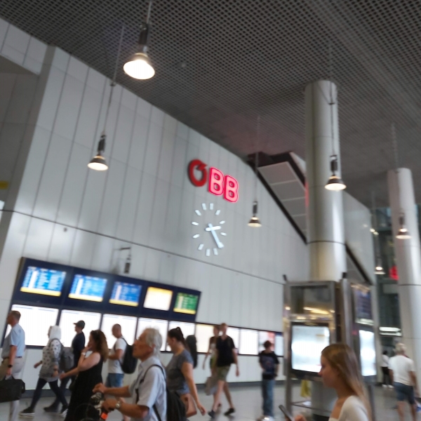
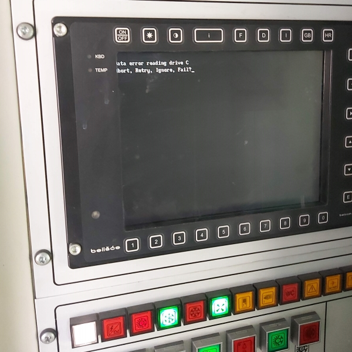
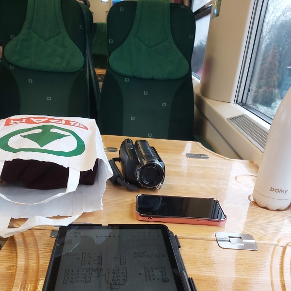
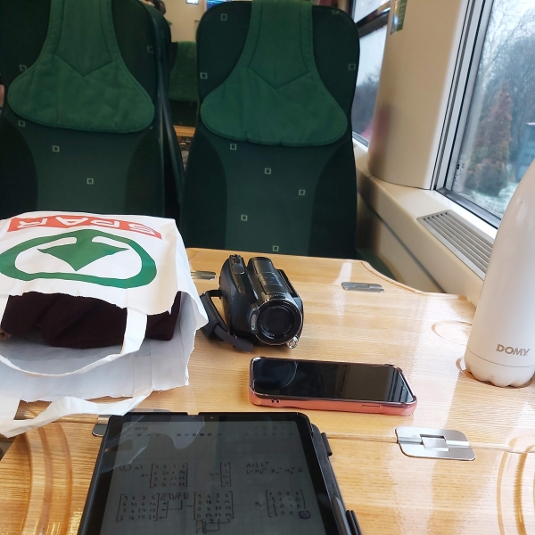
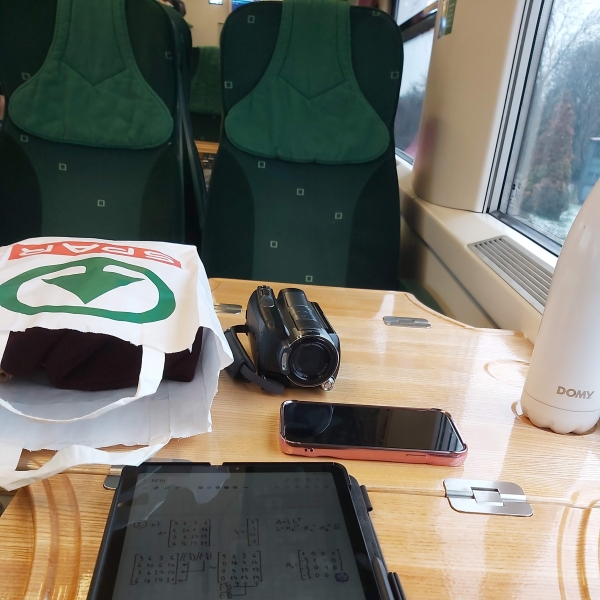

Vienna and Bratislava - December 2024
This was a pretty short weekend trip to Vienna just before Christmas. I also got to go to Bratislava in one afternoon. Pro tip: The best Christmas market for food in Vienna is... the one in Bratislava. Up your food game, Austrians!
Travel path
- Early morning departure from Slavonia toward Pécs, Baranya county, Hungary
- Pécs to Budapest-Kelenföld (western train station of Budapest) InterCity train
- Budapest-Kelenföld to Wien Hbf by ÖBB Railjet, arriving in the early afternoon
Return:
- Early morning departure from Wien Hbf once again with ÖBB Railjet to Budapest-Kelenföld
- Budapest-Kelenföld to Pécs
- Pécs to Beli Manastir passenger train, arriving early in the afternoon
What I did in Vienna and Bratislava
Nothing overly productive was done on this trip. Pretty much all I did for four days was eat food, look at Christmas decorations and eat more food. As such not many trains were seen either, but there were some news.
- All of the standard-for-me ÖBB and MÁV InterCity services!
- ÖBB RJX train to Bratislava. Now, these are technically not new to me - I regularly commute in Vienna by S-Bahn, which typically uses the Siemens Desiro. But on the S-Bahn stops you can also often see the RJX trains, which are typically double-deckers (Stadler KISS, I believe). Of course, I have made the mistake before and took the RJX instead of the S-Bahn, nearly ending up in Czechia!
Photo gallery



 

